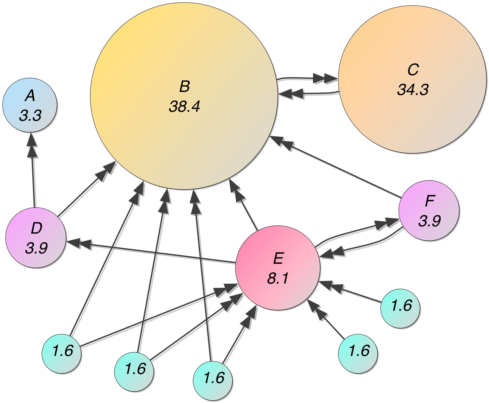

Chapitre 1 Les systèmes d’équations linéaires
Exemple 1.1 Pourquoi utilisez-vous Google?
Les calculs que doivent faire Google pour ordonner les sites de votre requête représente l’un des plus gros problèmes d’algèbre matricielle présentement résolus sur la planète.
Les résultats de l’algorithme de Google après les déplacements du promeneur impartial.

Exemple 1.2 (Où suis-je?) Le Global Positioning System (GPS) (en français : « Système mondial de positionnement » [littéralement] ou « Géo-positionnement par satellite »), originellement connu sous le nom de Navstar GPS, est un système de positionnement par satellites appartenant au gouvernement des États-Unis. Mis en place par le département de la Défense des États-Unis à des fins militaires à partir de 1973, le système avec 24 satellites est totalement opérationnel en 1995 et s’ouvre au civil en 2000.
Le principe de fonctionnement repose sur la trilatération de signaux électromagnétiques synchronisés émis par les satellites. Pour assurer la précision du positionnement, le système GPS utilise des technologies sophistiquées : horloges atomiques embarquées, compensation d’effets relativistes, mise en place de stations d’observation et de synchronisation. Les coordonnées terrestres calculées se réfèrent au système géodésique WGS 84.
Les positions des satellites sont choisies pour que au moins 4 satellites soient visibles de n’importe quel point du globe à tout moment.